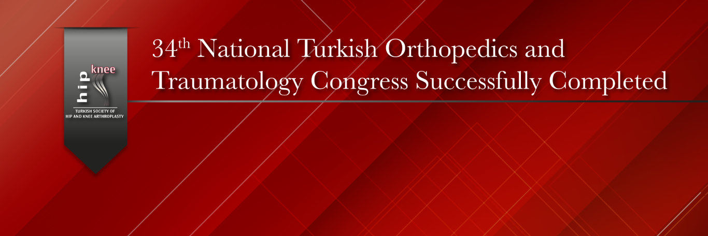

34th National Turkish Orthopedics and Traumatology Congress Successfully Completed
The 34th National Turkish Orthopedics and Traumatology Congress was successfully held between November 4–9, 2025, at Susesi Hotel, Antalya.
Within the scope of this year’s congress, and with the valuable support of the Hip and Knee Arthroplasty Association (KADAD), a total of eight Hip and Knee Arthroplasty sessions were organized — comprising three KADAD sessions and five TOTBİD sessions.
These sessions, dedicated to discussing the most up-to-date scientific and clinical developments in the field of hip and knee arthroplasty, received great interest from participants. The fully attended sessions once again reflected the strong academic engagement and commitment to scientific exchange within our community.
As KADAD, we take great pride in successfully contributing to another national congress.
We sincerely thank all speakers, session chairs, participants, and the organizing committee for their invaluable efforts and contributions to this successful event.

Resim Galerisi